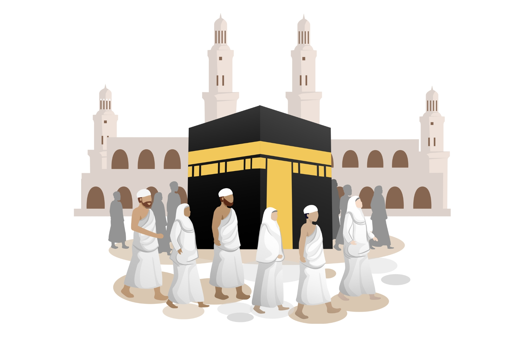

AL OMAR HAJJ AND UMRAH SERVICES
Complete Hajj Guide
Hajj is one of the five pillars of Islam, obligated upon every adult Muslim who is physically and financially able to undertake the journey to the holy city of Mecca at least once in their lifetime.
Hajj Pilgrim Places: A Journey of Faith
- 1. Miqat: Entering the State of Ihram –
- The Hajj journey begins at the Miqat, designated boundary points surrounding Mecca. These are specific locations where pilgrims intending to perform Hajj or Umrah must enter the state of Ihram. Ihram is a sacred state of purity and devotion, marked by specific dress codes and prohibitions.
- Dress Code: Men wear two unstitched white cloths, one wrapped around the waist and the other draped over the shoulder. Women wear simple, loose-fitting clothing that covers the entire body except for the face and hands.
- Prohibitions: While in Ihram, pilgrims are forbidden from cutting their hair or nails, using perfumes, engaging in sexual relations, hunting, or harming any living creature.
- Upon reaching the Miqat, pilgrims perform ablution (Wudu), declare their intention (Niyyah) to perform Hajj or Umrah, and recite the Talbiyah, a prayer proclaiming their devotion to Allah swt :
- لَبَّيْكَ اللَّهُمَّ لَبَّيْكَ، لَبَّيْكَ لاَ شَرِيْكَ لَكَ لَبَّيْكَ، إِنَّ الْحَمْدَ وَالنِّعْمَةَ لَكَ وَالْمُلْكَ لاَ شَرِيْكَ لَكَ.
- "Labbaik Allahumma Labbaik, Labbaik Laa Shareeka Laka Labbaik, Innal Hamda Wan Ni'mata Laka Wal Mulk, Laa Shareeka Lak"
- (Here I am at Your service, O Allah, here I am. Here I am, You have no partner, here I am. Truly, the praise, the favor, and the dominion belong to You. You have no partner.)
- 2. Mecca: The Heart of Islam –
- After entering Ihram, pilgrims proceed to Mecca, the holiest city in Islam. Mecca is home to the Kaaba, the sacred cube-shaped structure at the center of the Masjid al-Haram (Grand Mosque).
- Masjid al-Haram (Grand Mosque): The largest mosque in the world, encompassing the Kaaba and the surrounding courtyard. It is the focal point of Muslim prayer, with Muslims around the world facing the Kaaba during their daily prayers.
- 3. Tawaf: Circling the Kaaba –
- Upon arriving at the Masjid al-Haram, pilgrims perform Tawaf, circling the Kaaba seven times in a counter-clockwise direction. Tawaf symbolizes the unity of Muslims and their devotion to Allah.
- Starting Point: Tawaf begins at the Hajar al-Aswad (Black Stone), a sacred stone embedded in the eastern corner of the Kaaba. If possible, pilgrims try to kiss or touch the Hajar al-Aswad. If not, they can point towards it and say "Allahu Akbar" (Allah is the Greatest).
- Raml: During the first three rounds of Tawaf al-Qudum (the arrival Tawaf), men are encouraged to perform Raml, a brisk, shoulder-shaking walk.
- In Tawaf: Throughout Tawaf, He/she may say any Zikr (remembrance) of Allah that he/she wishes to say.
- Dua: once reached to Yemeni corner from there onwards untill reaching the blackstone, he/she would read this following dua:
- رَبَّنَا آتِنَا فِي الدُّنْيَا حَسَنَةً وَفِي الآخِرَةِ حَسَنَةً وَقِنَا عَذَابَ النَّارِ
- “Rabbana atina fid dunya hasanatan wa fil Aakhirati hasanatan waqina ‘adhaban-nar”
- (Our Lord, grant us good in this world and good in the Hereafter, and save us from the punishment of the Fire.)
- After circling the Kaaba seven times in a counter-clockwise direction. At the end of the seventh circuit, you should not raise hand as it done at the start of the circle. and perform two rakah of tawaf behind Maqam Ibrahim (the standing place of Ibrahim) by covering his right shoulder. One can recite Surah Al - Kafiroon in the first rakah & Surah Al- Ikhlas in the 2nd Rakah. Our Prophet Mohammed صَلَّى ٱللَّٰهُ عَلَيْهِ وَسَلَّمَ instructed after praying the two rakahs, On their way, they drank Zamzam water.
- 4. Sa'i: Walking Between Safa and Marwa –
- After completing Tawaf, pilgrims perform Sa'i, walking seven times between the hills of Safa and Marwa, located within the Masjid al-Haram. Sa'i commemorates Hagar's desperate search for water for her son Ismail عَلَيْهِ ٱلسَّلَامُ.
- Green Markers: Green markers indicate the areas where Hagar ran with more urgency. Men are encouraged to run (jog) between these markers.
- Dua: These are supplications to recite during Sa'i
- After Our Prophet Mohammed صَلَّى ٱللَّٰهُ عَلَيْهِ وَسَلَّمَ approached to As- Safa he recited the verse in which allah almighty says: In surah al- Baqarah ayah 159 -
- رَبَّنَا آتِنَا فِي الدُّنْيَا حَسَنَةً وَفِي الآخِرَةِ حَسَنَةً وَقِنَا عَذَابَ النَّارِ
- “Inna As-Safa wal-Marwah min sha'a'irillah”
- (Indeed, Safa and Marwa are among the symbols of Allah.)
- رأَبْدَأُ بِمَا بَدَأَ اللهُ بِهِ
- “Abda-o bima badaal-lahu bih.”
- (I begin with what Allah began with)
- Our Prophet Mohammed صَلَّى ٱللَّٰهُ عَلَيْهِ وَسَلَّمَ started with Safa and climed it until he could see the Kaabah, he then faced it and said:
- اللهُ أكْبَرُ، اللهُ أَكْبَرُ، اللهُ أَكْبَرُ
- “Allahu akbar, Allahu akbar, Allahu akbar.”
- (Allah is the greatest, Allah is the greatest, Allah is the greatest.)
- and then he would say the following three times making a supplication (one should make a personal supplication) after each time:
- لَا إِلهَ إِلَّا اللهُ وَحْدَهُ لَا شَرِيكَ لَهُ، لَهُ المُلْكُ وَلَهُ الحَمْدُ وهُوَ عَلى كُلِّ شَيءٍ قَديرٌ، لَا إِلَهَ إِلَّا اللهُ وَحْدَهُ أَنْجَزَ وَعْدَهُ، وَنَصَرَ عَبْدَهُ وَهَزَمَ الأَحْزَابَ وَحْدَهُ.
- "La ilaha illal-lahu wahdahu la shareeka lah, lahul-mulku walahul-hamd, wahuwa AAala kulli shayin qadeer, la ilaha illal-lahu wahdah, anjaza waAAdah, wanasara AAabdah, wahazamal - ahzaba wahdah."
- (None has the right to be worshipped except Allah, alone, without partner. To Him belongs all sovereignty and praise and He is over all things amnipotent. None has the right to be worshipped except Allah alone. He fulfilled His promise, aided His Servant and single-handedly defeated the allies.)
- Our Prophet Mohammed صَلَّى ٱللَّٰهُ عَلَيْهِ وَسَلَّمَ repeat this action at Mount Marwah.
- 5. Mina: The Tent City –
- On the 8th day of Dhul-Hijjah (the 12th month of the Islamic calendar), known as Yawm al-Tarwiyah (the Day of Watering), pilgrims travel to Mina, a tent city located a few kilometers east of Mecca.
- Spending the Day in Prayer: Pilgrims spend the day in Mina praying, reciting the Quran, and preparing for the Day of Arafah.
- 6. Arafat: The Day of Repentance –
- On the 9th day of Dhul-Hijjah, known as Yawm al-Arafah (the Day of Arafah), pilgrims travel to Arafat, a vast plain located about 20 kilometers east of Mecca. Standing on the Plain of Arafat is the most important ritual of Hajj.
- Standing in Prayer (Wuquf): Pilgrims spend the entire day in Arafat standing in prayer, seeking forgiveness from Allah, and making supplications. Wuquf (standing) begins after noon and continues until sunset.
- Mount Arafat (Jabal al-Rahmah): Many pilgrims climb Mount Arafat (the Mount of Mercy), Our Prophet Mohammed صَلَّى ٱللَّٰهُ عَلَيْهِ وَسَلَّمَ delivered his farewell sermon.
- 7. Muzdalifah: Gathering Pebbles –
- After sunset on the 9th of Dhul-Hijjah, pilgrims travel to Muzdalifah, an open area between Arafat and Mina.
- Collecting Pebbles: Pilgrims spend the night in Muzdalifah and collect pebbles for the Ramy al-Jamarat (Stoning of the Pillars) ritual in Mina.
- Prayer: Pilgrims perform the Maghrib (sunset) and Isha (night) prayers together in Muzdalifah.
- 8. Mina: Stoning of the Pillars (Ramy al-Jamarat) –
- On the 10th day of Dhul-Hijjah, known as Yawm al-Nahr (the Day of Sacrifice), pilgrims return to Mina to perform Ramy al-Jamarat, the stoning of the pillars.
- Sacrifice (Qurbani): After Ramy al-Jamarat, pilgrims sacrifice an animal (usually a sheep, goat, or cow) in commemoration of Prophet Ibrahim's willingness to sacrifice
- Shaving or Trimming Hair (Halq or Taqsir): Men shave their heads (Halq) or trim their hair (Taqsir), signifying the completion of a major part of the Hajj rituals. Women trim a small lock of their hair. With this act, pilgrims exit the state of Ihram, although some restrictions remain.
- 9. Return to Mecca: Tawaf al-Ifadah –
- After performing Ramy al-Jamarat, sacrifice, and shaving/trimming, pilgrims return to Mecca to perform Tawaf al-Ifadah, also known as Tawaf al-Ziyarah and Tawaf al-Hajj. This Tawaf is an obligatory part of Hajj.
- Completion of Hajj: After completing Tawaf al-Ifadah and Sa'i (if not already performed), pilgrims are completely free from the restrictions of Ihram.
- 10. Mina (Continued): Stoning of the Pillars –
- (Days 11, 12, and optionally 13 of Dhul-Hijjah)
- Pilgrims return to Mina and spend the next two or three days (11th, 12th, and optionally 13th of Dhul-Hijjah) performing Ramy al-Jamarat again.
- Stoning All Three Pillars: Each day, pilgrims stone all three pillars (Jamarat al-Ula, Jamarat al-Wusta, and Jamarat al-Aqaba) with seven pebbles each.
- 11. Farewell Tawaf (Tawaf al-Wida) –
- Before leaving Mecca, pilgrims perform Tawaf al-Wida (the Farewell Tawaf), circling the Kaaba seven times as a final act of devotion and a farewell to the holy city.
- Leaving Mecca: After completing Tawaf al-Wida, pilgrims can depart from Mecca, their Hajj journey completed.
- The Hajj is a profound spiritual